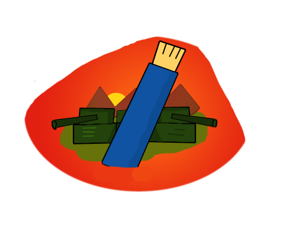

INDIVIDUALLY:
You can do make an invidual effort by spreading your word through various forms of media. You can yourself make a change by avoiding plagiarism at any costs and citing sources for every research work,project etc.
AS A COMMUNITY
You can join like minded people (probably your friends and family) and show protests by making captivating signs, posters and slogans. You can start group discussions, form teams and create engaging and helpful projects.
GLOBALLY
You can make an effort, by creating blogs,websites video, where you can address your audience about this problem. You can form legal documents and send it to the respected higher authorities so legal action can be taken against it. You can contact friends abroad and spread this message worldwide.